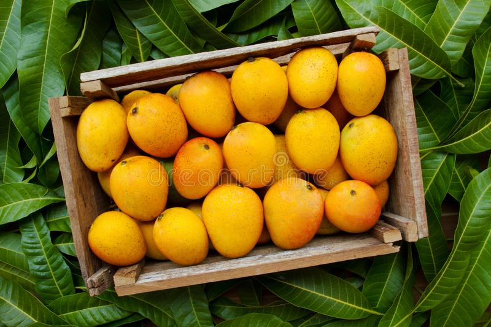
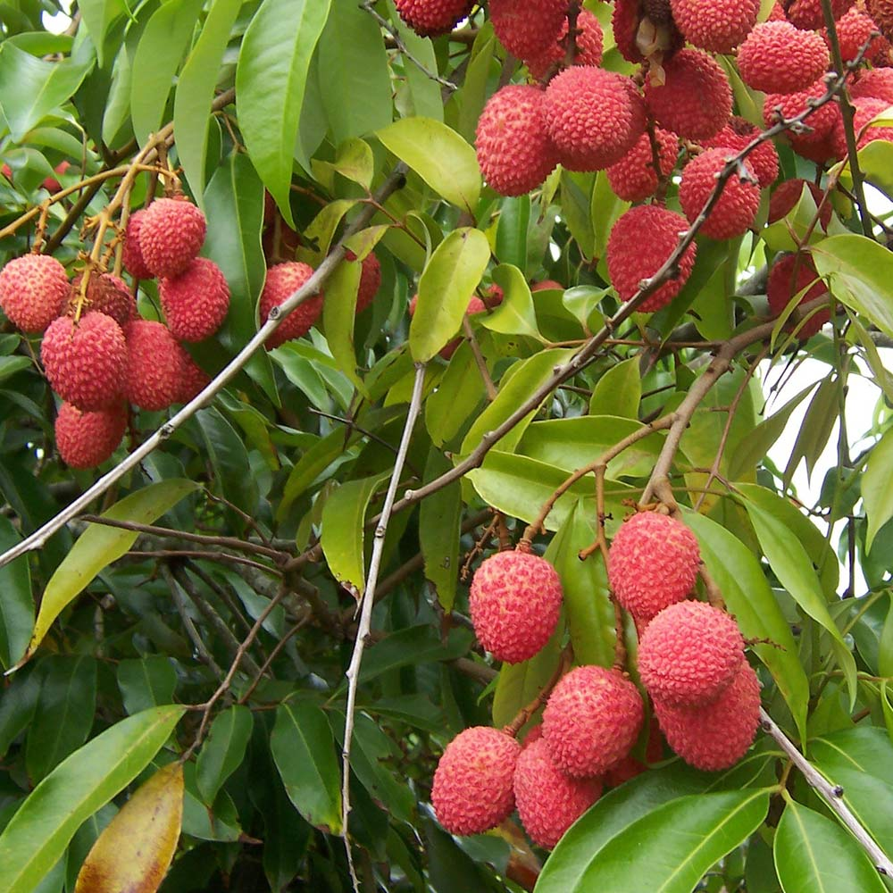
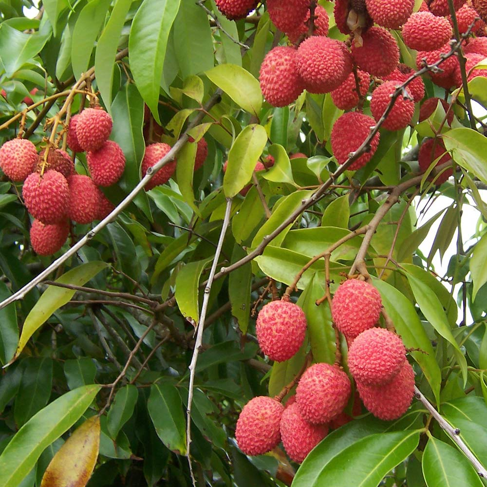

conoce las frutas exoticas de huichihuayan
En huichihuayan existen las frutas exoticas mas reconocidas mundialmente por los turistas
La yaca
la yaca es una fruta exotica que tiene un color verde, que cuando se madura se pone d color amarilla. Con un peso de 10 a 15 kilos,dependiendo de la variedad hay unas redondas
 


Variedad de frutas..
Para poder lorar las plantas frutales se necesita primeramente cuidarlas,limpiarlas y fertilizarlas para que puedan lorar su cultivo.